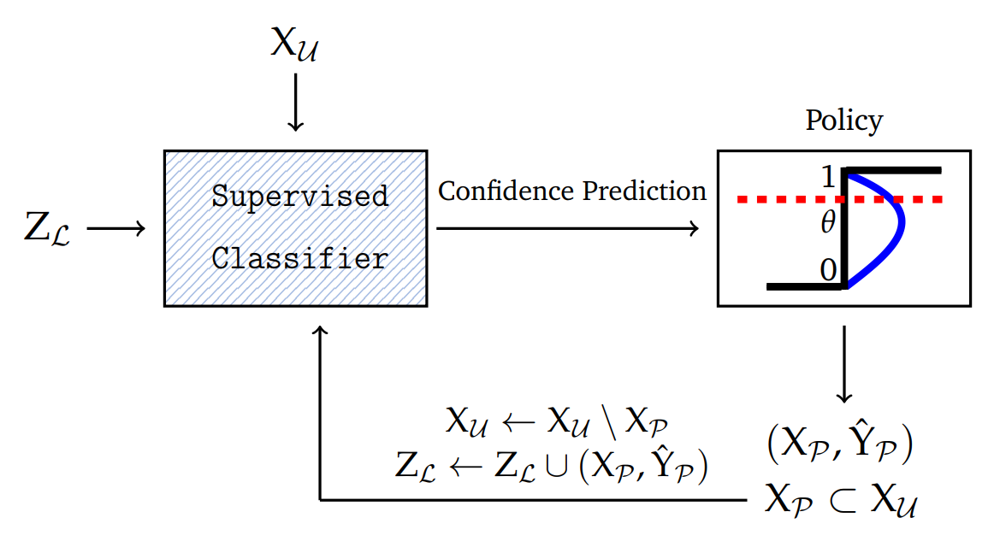
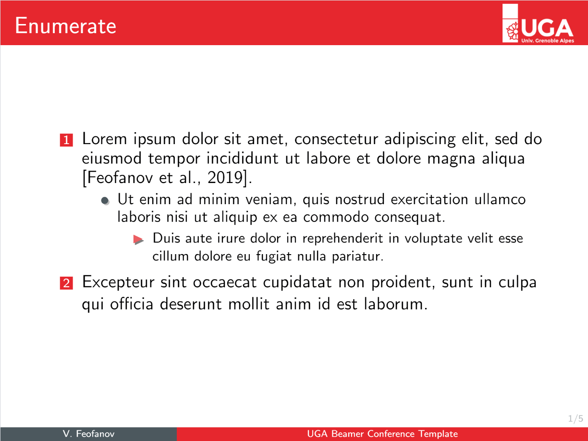

Home Publications Materials Contact Research Teaching Code  Multi-class Self-learning Algorithm (MSLA) The source code for the MSLA proposed in the paper "Transductive Bounds for the Multi-class Majority Vote Classifier". Code  UGA Beamer Template Very simple beamer template for the University Grenoble Alpes. Demo Code